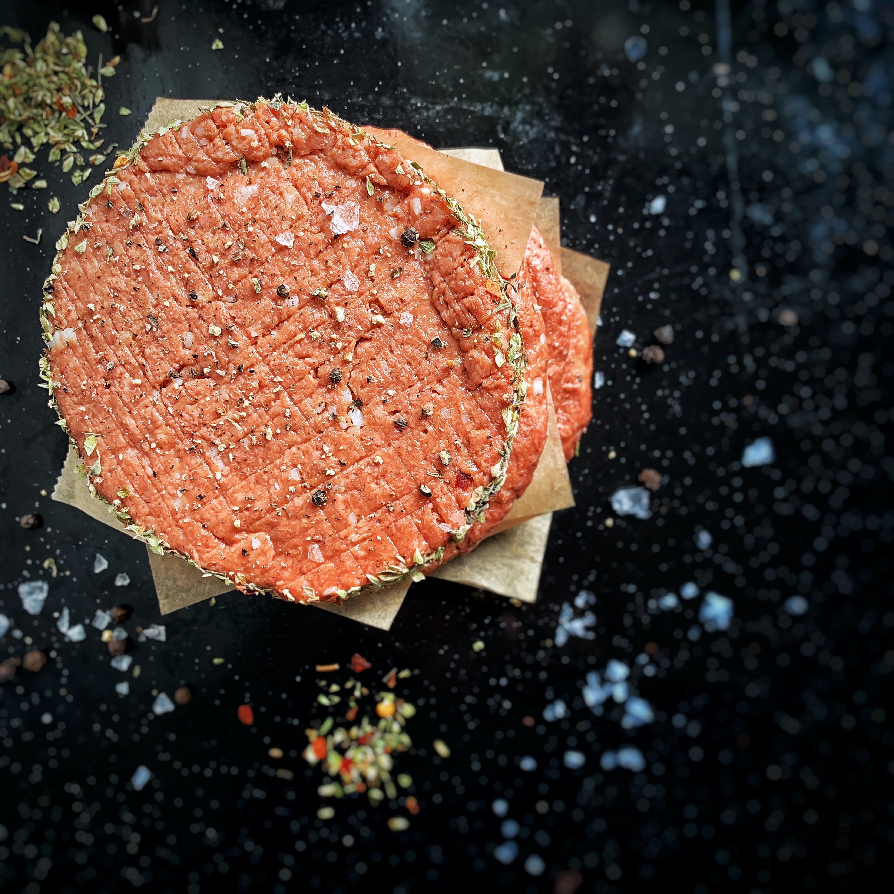
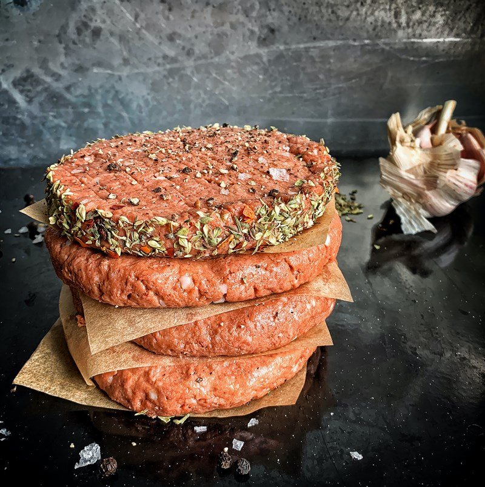
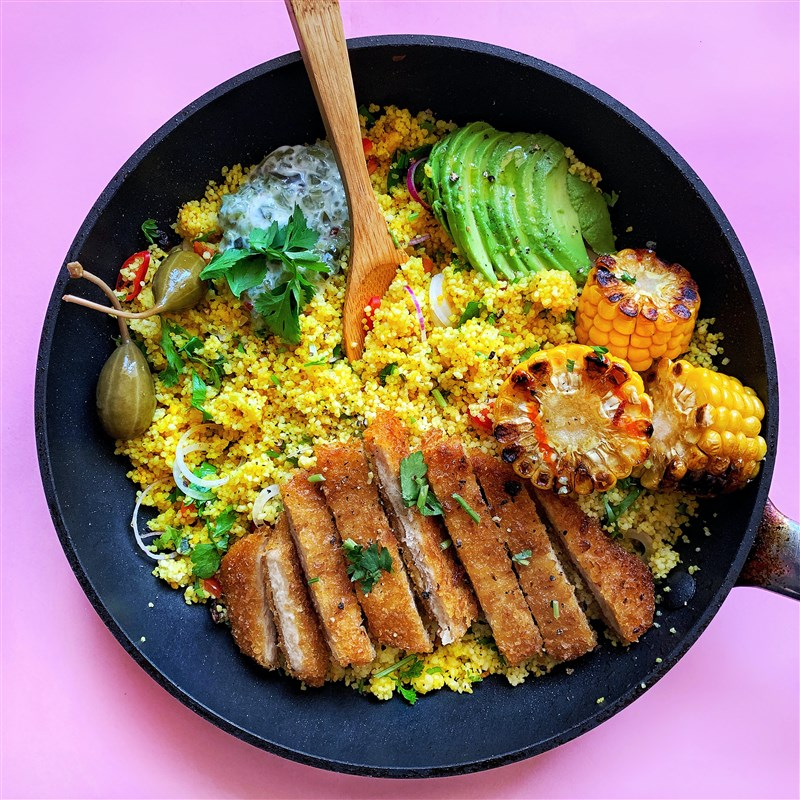

發表在科學雜誌《未來食品》( Future Foods )
上的一項新研究指出，植物肉具有良好的營養成分，且其味道、質地和口感，是參考動物肉複製而成，因此植物肉有機會取代動物製品，提供消費者環境永續的選擇。若未來加工和成分更加創新，增進植物肉營養價值指日可待。

植物肉對健康的益處該研究指出，40%的動物肉被視為「不太健康」，植物肉僅占
14%，且植物肉和奶製品有助於減重和增肌，並可用於幫助患有特定健康狀況的人，每天食用植物肉可使髖部骨折風險降低 49%。
與雞肉相比，由真菌蛋白（一種源自真菌的單細胞蛋白）製成的肉可顯著降低胰島素反應，從而減少體重超重的人胰島素釋放。
報告指出，在許多情況下，植物性成分的加工可以改善營養，例如豆類製作成植物肉，可增強人們消化它們的能力。植物性食物具有降低膽固醇的功效，並有助於改善腸道健康。

製造商若在植物性食品中添加食用真菌、微藻或螺旋藻等成分，可增強氨基酸、維生素B和E，以及抗氧化劑等特性。未來加工和成分創新，將可增進其營養價值。
若要實現這些目標，勢必需要額外的研究資金，確保製造商能夠生產出味道更好、更健康的產品，並為消費者提供環境友善的選擇。

植物肉較永續環境研究提及，植物性產品產生的溫室氣體較動物性產品低。用豌豆蛋白代替5%的德國牛肉消費量，每年可減少800
萬噸二氧化碳排放；與牛肉漢堡相比，植物性漢堡的溫室氣體排放量少了98%。
植物性產品較動物性產品，所需的農業用地和用水少，造成的環境汙染也少，所需能源亦不多於動物性產品。
由於植物肉的味道、質地和口感，是參考動物肉複製而成，因此與其他全植物性食品，植物肉更有機會取代動物製品，可減少對環境產生的汙染。